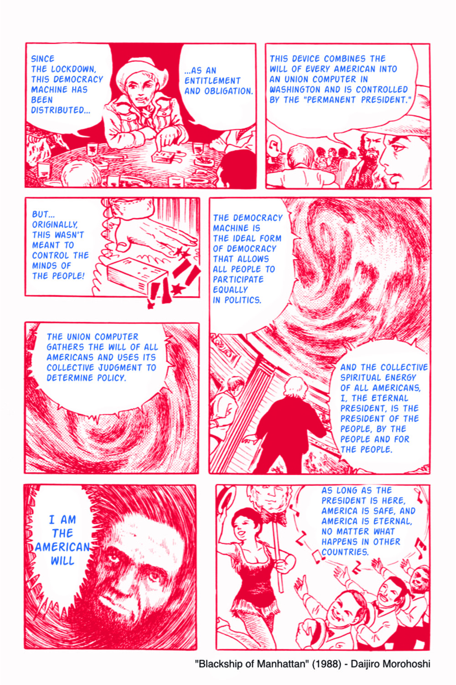
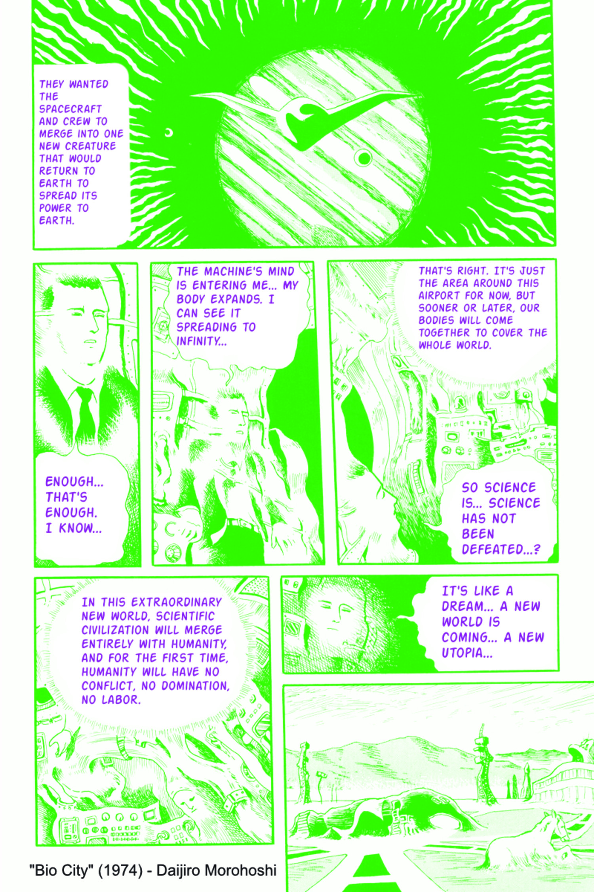

Makuhari City WS
workshop held at:

Figure 1: マンハッタンの黒船
3 デザインプロセス論として利用 ⇦ 酒井の興味
3.0.1 Participatory Budgeting
3.0.2 Remixing
- 創造的な行為は全て ’リミックス’ lessig2008remix hiphop, coding, cooking recipies… etc, why not social planning and design??
- その導入として、Fractional voting って一種の remixing 手法である。
- 既存のスマートシティ政策は須く、文化のリミキシングという視点を捉えられていない。
- lmn architecture 3D モデルの version 管理による建築モデルの評価システム
- china town
3.2 Limitation

Figure 2: 生物都市
ぼくが選挙権を分割するという話を考えたときには、それは人間の権利を解体して合法的に不平等を実現するための手段として構想した。それが実現性があるというのは、ぼくはうれしいけれど、きみたちそれでいいの？
矛盾した投票(税金下げろ:0.5, 社会福祉増やせ:0.5)を行った場合の積極的な無責任が可能になる。→ 狭義の意味での棄権に近い。これと分断がどちらがいいかがポイント、離散的な投票(トランプ vs バイデン)ができるから分断が起こるのではないか？これと表裏一体な気がする。
なめらかの究極は「生物都市」であると。同じコンセプトは Avatar,コンテクストで表現のされ方が変わるのでは?
→ いきなりこれで国家システムを塗り替えるのは無理だし、おそらく審議民主主義とセットで回していくのが妥当な方法だと思う。向こう側の立場を理解するという訓練として使われるだけで、すでに意味があるのではないか?
4 デモ!
Bibliography
- [morohoshi1988shitsuraku] "諸星, 失楽園, 創美社,集英社 (発売) (1988).
- [lessig2008remix] Lessig & others, Remix: Making art and commerce thrive in the hybrid economy, Penguin (2008).